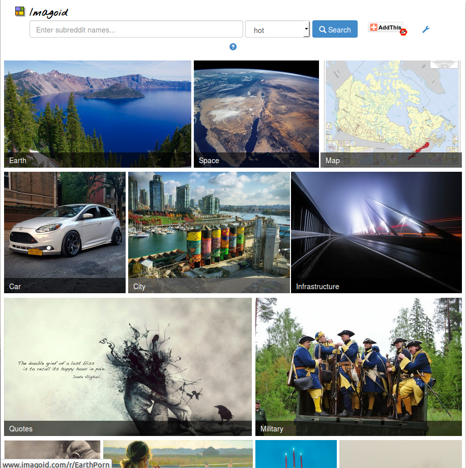
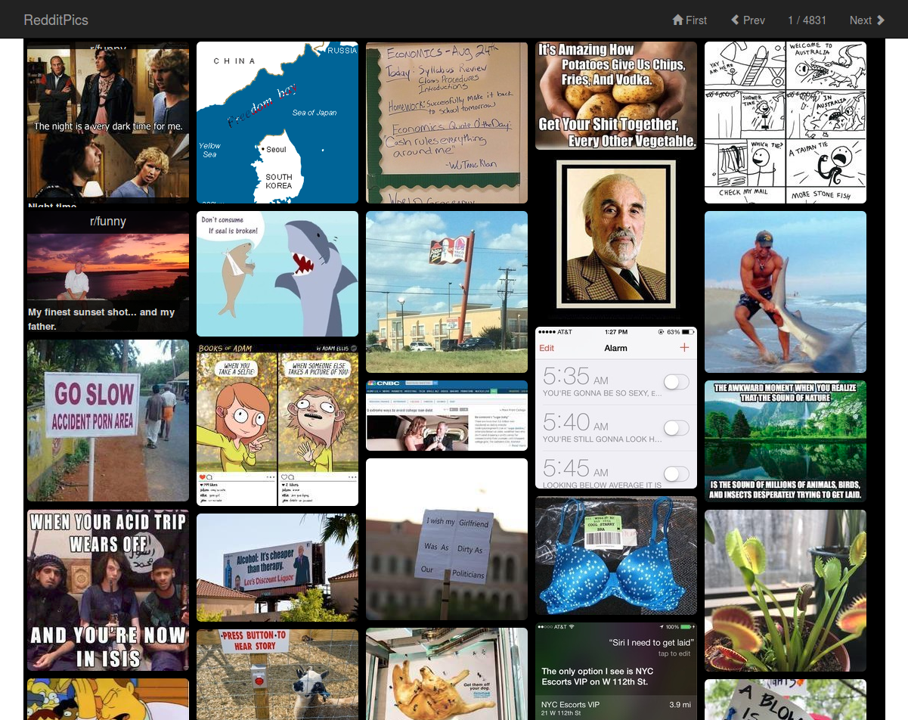
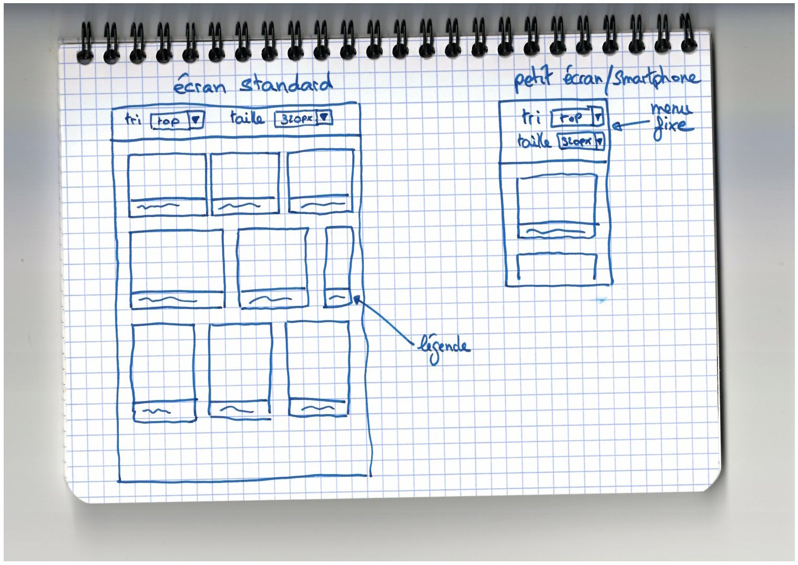

Les APIs sont centrales dans le web moderne. Tous
les principaux services en exposent et il n'est
pas rare d'en coordonner plusieurs dizaines pour
réaliser un site. Ce projet vous fera manipuler
l'API de reddit, un forum orienté partage
de liens. Vous devrez l'utiliser pour produire un
site complet en HTML 5, CSS 3 et javascript
(ECMAScript 6).
À partir des spécifications et maquettes données
ci-dessous, vous devrez concevoir un client pour
le sous reddit /r/Pics.
Exemples
De nombreux projets utilisent l'API reddit, que ce
soit pour y maintenir des robots qui effectuent
diverses tâches (voir
/r/botwatch)
ou pour extraire des informations spécifiques pour
les utiliser dans un site externe. Dans ce dernier
cas d'utilisation (celui qui nous intéresse), on
peut par exemple trouver
Imagoid ou
encore RedditPics :


Structure en HTML 5 et CSS 3
L'objectif premier de ce projet est d'appliquer les
connaissances que vous avez acquises lors des
séances précédentes. Pour cela, vous devez écrire
une interface web en utilisant uniquement HTML
5/CSS 3. Un exemple d'interface est illustré
ci-dessous.

Vous êtes libres de créer le positionnement et les
effets que vous souhaitez mais en respectant les
contraintes suivantes :
Utiliser les nouveautés introduites par HTML 5
(e.g. balises sémantiques) et CSS 3
(e.g. dégradés, transformations).
Ne pas utiliser Javascript pour l'interface.
Utiliser les media queries pour
adapter l'interface aux petites résolutions.
un fichier interface.html de
démonstration, sans Javascript, où vous
utiliserez des images (placées dans le dossier img_test)
et métadonées de test pour faire la
présentation de votre interface;
les fichiers CSS nécessaires, placés dans un
dossier nommé css.
Données et interactivité en Javascript
Dans le même esprit que la partie précédente,
l'objectif de la partie Javascript de ce projet
est d'appliquer les notions que vous avez
découvertes ou approfondies durant le cours et les
tutoriels suivis en ligne.
Vous devez dans cette partie :
récupérer les données nécessaires au
fonctionnement de votre client (images,
légendes, scores, dates) grâce à l'API de
reddit;
les filtrer et les ordonner en fonction des
sélections des menus de contrôle de la taille
et du tri;
les afficher dans l'interface réalisée dans la
partie précédente du cours.
Votre travail devra être réalisé en ECMAScript
6. Vous pourrez de plus vous aider de librairies
externes (à valider avec l'encadrant). Parmi
celles-ci, citons :
React pour
la construction de l'interface utilisateur;
jQuery pour
récupérer facilement les JSONs de l'API
reddit.
Le rendu de cette partie comprend :
un fichier app.html basé sur interface.html qui
implémente les spécifications données
ci-dessus;
les fichiers de script (js voire jsx),
placés dans un dossier nommé js;
les fichiers nécessaire à la construction du
fichier js utilisé par app.html;
un README détaillant la
procédure à suivre pour rendre
l'application utilisable.
Rendu
Vous rendrez l'entièreté de votre projet sur le
Madoc du cours sous la forme d'un fichier .zip. Celui-ci
devra contenir un seul dossier nommé NOM_PRENOM-NOM2_PRENOM2
qui sera la racine de votre projet.